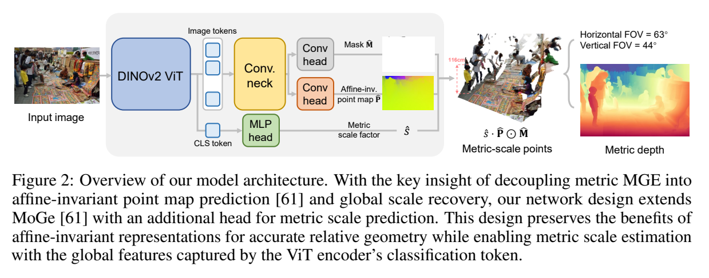

MoGe 系列
相对形状 → 米制尺度 → 几何细节
沿着监督、数据与空间邻域，理解三代方法怎样逐步改善单目几何。
01 / THE RESEARCH LINE从“学什么”到“用什么标签”，再到“在哪里交互”
MoGe 系列围绕单张 RGB 的可见表面几何展开。它可以处理场景，也可处理画面中的物体，但不直接生成完整物体背面、建立多视融合地图或解决时序一致性。三篇共享单目先验与点图路线，每代针对不同瓶颈。

MoGe
相对几何：怎样消除监督中的歧义？
独立精读 · 方法 / 实验 / 讨论 ↗
MoGe-2
尺度与标签：怎样兼得米制几何和细节？
独立精读 · 方法 / 实验 / 讨论 ↗
MoGe-3
几何邻域：怎样让细结构在 3D 中成立？
独立精读 · 方法 / 实验 / 讨论 ↗本页比较系列方法；各论文页保留英文摘要、作者单位、关键原图、实验和讨论。原 MoGe 精读已整理至 MoGe 原始论文页，旧章节锚点在这里继续可用。
02 / METHOD COMPARISON三个改动层次，不是一条简单的模型加大路线
| 论文 / 瓶颈 | 保留与新增 | 完整推理流程 | 尚未解决 |
|---|---|---|---|
| MoGe 单图监督歧义 | affine-invariant 点图；ROE 鲁棒对齐；多尺度局部损失 | 前馈点图与 mask → 投影求解焦距、z-shift → 相对几何 | 真实尺度、细结构、时序一致性 |
| MoGe-2 米制尺度与脏标签 | 继承相对点图；CLS-MLP 尺度头；真实标签局部过滤 + Poisson 补全 | 相对几何恢复 + 预测尺度 → 米制点图；标签清理不在推理环节 | 域外尺度偏差、细线与远近景交界 |
| MoGe-3 2D 邻域混合前后景 | MoGe-2 初始化 + SSR；像素/log-depth 稀疏体素；迭代深度残差；局部监督也有修改 | 基础点图 → 体素化/稀疏 U-Net/重建邻域，默认重复 3 步 | 初始射线限制、边界飞点、额外延迟 |
共同的尺度逻辑：MoGe 允许 sP+t 的监督自由度（并非任意 3D 仿射），在中心主点假设下全局 shift 沿 z 轴。MoGe-2 用学习分支补尺度；MoGe-3 延续 metric 输出并细化局部。后两者的“米制”来自训练先验，不能把单目观测的物理歧义视为已经消失。
MoGe-3 的“3D”具体指什么：离散坐标为 (像素行, 像素列, round(D·log Z))，稀疏卷积据此分离不同深度表面。细化固定 X/Z、Y/Z，只更新 log Z；它是投影对齐的几何邻域，而非任意方向的欧氏点云形变。
03 / SUPERVISION三代都在决定：哪些误差应该交给网络学习？
04 / EVIDENCE沿各论文的受控实验读，避免跨协议拼榜
MoGe-2：细节提高，有米制代价
Table 4 的 ViT-B 消融：真实标签改良后 F1 为 10.3 → 12.5；metric depth Rel 为 15.8 → 16.5（越低越好）。它改善折中，并非所有指标同时提升。看原表与解释 ↗
MoGe-3：3D 对照强于单纯加容量
Table 3 冻结同一基座：局部点 δ 为基础 46.6%、参数匹配 2D 47.0%、SSR 55.1%；metric depth Rel 却为 15.6 → 16.4。看原表与训练条件 ↗
指标边界：MoGe-2 的 metric point 允许平移、metric depth 不对齐；MoGe-3 的局部指标选取细节分割区域、共享全局尺度、逐区平移，且主要局部测试仅用 Spring 和 Synth4K。其 δ₀.₀₁ 与此前局部 δ₁、边界 F1 的不同半径都不能直接混比。
计算代价：在 MoGe-3 同一 A100 / FP16 / 700² 测量中，MoGe-2 为 39 ms，三步 SSR 的 ViT-L 为 121 ms。更稀疏的空间表示不代表比原来的 2D 模型更快；应按目标细节与延迟选择配置。
05 / DISCUSSION把形状、尺度、细节、时序四类错误分开
方法研究判断：三篇提供了三个可迁移的切入点：目标自由度是否合适、标签是否真的支持细节、特征邻域是否符合几何。它们互补，不能用单项“边缘更锐”替代三维误差或尺度验证。
可检验的延伸：固定 MoGe-3 的基础模型与训练数据，分别加入可信尺度锚点、纠正初始射线、替换精细标签，再观察未对齐深度、局部形状与边界指标。这样可区分错误来自单目先验、初始参数化还是细化器；这些是研究建议，不是论文已证实结果。
范围边界：物体资产重建还需要不可见表面补全；场景建图还需要相机轨迹、融合和一致性。若接入多视系统，应检验单目先验与真实观测是否冲突，不能逐帧拼接点图便宣称完成一致重建。
06 / READING ROUTE建议按问题读完三篇
SOURCES / CHECKED 2026-10-26固定版本与发表记录
MoGe 来源记录 · 2410.19115v3 · 已发表 · CVPR 2025
MoGe-2 来源记录 · 2507.02546v1 · 已发表 · NeurIPS 2025
MoGe-3 来源记录 · 2607.17967v2 · 预印本版本 · 作者页称 NeurIPS 2026 接收
MoGe-3 的 NeurIPS 2026 接收信息来自作者项目页，会议官方记录未核实。图表、公式和数值以所列 PDF 为准。